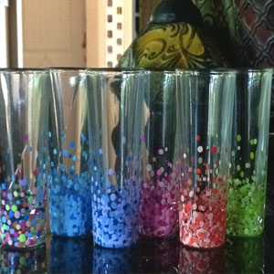

Homepage
 |
 |
This website shows you how to do a variety of crafting.
Categories of crafts include wall art, scrapbooking, t-shirt making, and making glassware.
There is also a section on Sorority Paddles and some pages include video demonstrations.